Next: How while loop works? Up: Control Flow and Decision Previous: Disadvantages of Using for-each Contents
In computer programming, loops are used to repeat a specific block of code until a certain condition is met (test expression is false). For example, imagine we need to print a sentence 50 times on your screen. Well, we can do it by using the print statement 50 times (without using loops). How about you need to print a sentence one million times? You need to use loops. With loops, we can simply write the print statement one time and run it for any number of times. It's just a simple example showing the importance of loop in computer programming. There are 3 types of loops in Java: for loop, while loop, and do-while loop. The syntax of while loop in Java is:
